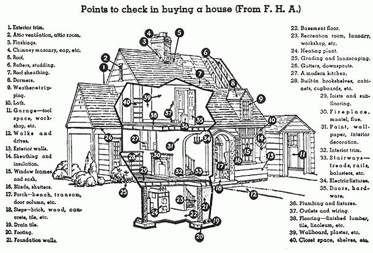
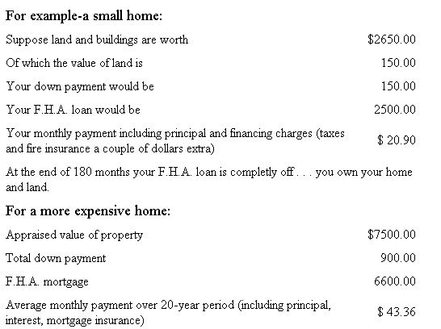

MAYBE you already have a place of at least 3/4 of an acre of level, good land. So much the better, but read this section carefully to make sure your land is suitable for intensive cultivation.
I am going to suppose you live in the city - own no land - and know nothing about finding a suitable place in the country.
Here's how you start. Get a good map of your locality. Take a compass and using your place of work as a center point, make a circle the radius of which should be approximately the distance you can travel in one hour.
If you own a car, this radius could well be 25 miles. This 25 mile radius will enclose a territory of 1,962 square miles (an area about equal in size to the whole state of Delaware). If you expect to travel by bus, street car or subway to your job, the radius would be shorter.
Next study the encircled area. Is there any particular part of it in which you would especially like to live? Have you friends in some part? If so - talk to them about finding a place.
The most important single step in the "Have-More" Plan is selecting a suitable place. If there is any question in your mind as to whether you will enjoy owning your own home - raising your own food or living in the country - or any other doubts - rent in the community you select before you buy. Remember, you are choosing a place to make a permanent home - you are not simply leasing an apartment for another year.
The very fact that this first step is so important and difficult is a good thing because if you haven't enough gumption to go out and find yourself a place - then you probably would never make it amount to anything even if a rich Uncle left you the place in his will.
One reason so many city dwellers continue to go on paying rent and living the restricted life people lead in an apartment seems to be because they don't know how to go about finding and developing a place of their own. Another obstacle is the mistaken belief that they can't afford a country place of their own.
Many people who go to a doctor when they are sick, a dentist when they've got a toothache, balk at going to a real estate man to buy property. Somehow they figure they can find a bargain in real estate themselves if no real estate man enters the picture. Of course, a real estate man is in the business of selling real estate - and he is going to sell everybody he can. But most people who get stuck by a real estate man let him sell them something he wants to sell. They don't tell him exactly what they want - and make him find it for them.
We have prepared a "score-card" which you will find helpful in talking with a real estate man. This "scorecard" is a guide to the qualifications a place in the country should ideally have in order for you to utilize it successfully in accordance with the "Have-More" Plan. Of course, you may not find a place that has everything you want, but with your own good judgement and careful consideration you can pick the best suited available place in your chosen locality.
Take this "score-card" with you when you talk to any real estate man.
It will save you time in telling him what you want. It will save you fruitless hours of riding from one piece of property to another only to be disappointed because it is not suitable. But most important, it may save you hundreds of dollars and years of work by protecting you from buying a place that you later find impossible to make productive.
When you are buying property it costs nothing to deal with a real estate man. He gets a commission, usually 5% of the sale price, from the seller. Every real estate man has a number of houses with land listed. This same property may also be listed by other real estate agents. So you can see how competition tends to keep the prices on property in line. Usually, it is the best practice for you to talk to a number of real estate agents. Then, you can do business wih the agent you like.
A Word of Caution: If you can, rent a place with an option to buy it at a definite price at the end of a certain time - for example, a year - do this if there is any doubt in your mind about the place and the community.
A good farmer in buying a new farm gives primary consideration to the land - the state it's in . . . whether it's easy to cultivate - neither dry nor wet, nor too sandy, nor too shallow. This you should also do.
We are approaching a wonderful new era of home-building. Shortly houses the like of which we have never seen will become available at low cost. Nobody knows just when these houses will be ready - but authorities agree they are coming. Remember this - and consider seriously buying your land now and getting the land in the condition you want it. Perhaps the house on it - even if it's "just a shack" - can be made livable for the present.
Should you plan to build your own house or buy land with a house on it? This question you can decide for yourself. If you find a suitable piece of land - I mean suitable because of size, condition, levelness, closeness to work - and it has a good substantial house on it that you like then buy it. But if you can't find on one place both a satisfactory house and satisfactory land - take the place where the land is right. You can always build a house - but some land is almost impossible to make fertile.
If you plan to rent a place before you buy - then you can find a house and land for what you are now paying. Specifically, you can rent a satisfactory place for $15 a month or go as high as $100, depending on section of country.
If you plan to buy you will find the price of suitable land ranges from $100 to $1500 an acre. The larger the piece - the less cost per acre. If you want to buy the land only, this is all right if you are now living close enough to go to it regularly and start getting it in shape.
You can buy land by putting up a cash payment of as little as 30%. Even if your land has no house you perhaps are living close enough to have a garden. The money you don't have to spend on vegetables can then help you pay for the land. Or go get a bank to pay the owner outright and take a mortgage for the balance. If a bank won't give you a mortgage on the land, be careful. There might be something wrong with the land, its location or price.
Perhaps you can buy land with a house on it. You can then put your rent money into paying for the property. Also, a house on the land means you can start immediately making the land pay for itself because if you live there you will be able to put more time into getting your "Have-More" Plan under way.
You may be surprised at this, but 44% of all Americans own their own homes. This the government encourages by sponsoring the Federal Housing Authority (F.H.A.).
F.H.A. makes it possible to buy or build a beautiful modern home and pay for it out of a moderate income.
The purchase, or building, of your house will probably be the biggest single financial transaction you will ever undertake. Only if you have a super-abundance of funds can you afford to experiment. Few people have the technical knowledge to tell the difference between a well-built house and a poorly built structure. As the F.H.A. points out:
The very elements which make the proposed loan a 'good risk' to the lender and to F.H.A. are the same elements which assure the borrower of a sound investment, good construction; livability, and comfort in his new home.
Suggested Reading:
Buying Country Property, $1.50.
|
 |
 |
|